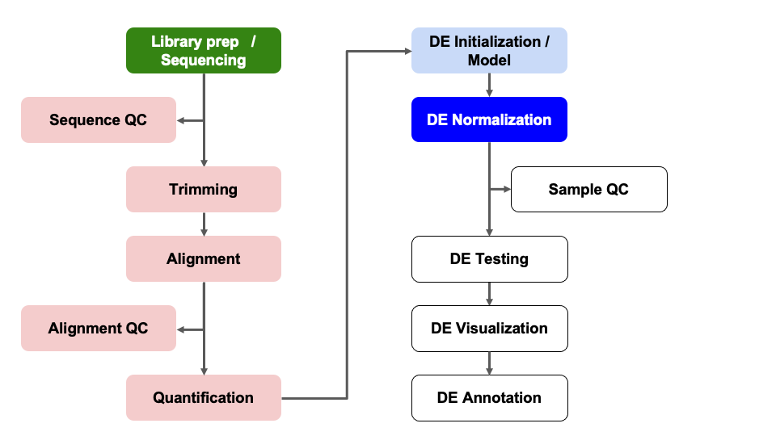

Module 08: DE Normalization and Modeling
UM Bioinformatics Core
2023-08-07
Objectives
- Discuss count normalizations
- Execute model fitting for differential expression comparisons
Differential Expression Workflow
Here we will proceed with count normalizations and fit our DESeq2 model.

Count normalizations
Since counts of mapped reads for each gene is proportional to the expression of RNA in addition to many “uninteresting” other factors, normalization is the process of scaling raw count values to account for the “uninteresting” factors and ensure expression levels are more comparable.
Normalization goals
Two common factors that need to be accounted for during normalization are sequencing depth and gene length. Common normalization approaches (such as FPKM, RPKM, CPM, TPM, etc.) account for one or both of these factors.
- Sequencing depth normalization is necessary to account for the proportion of reads per gene expected for more deeply sequenced samples (like in pink below) versus a less deeply sequenced sample (like in green below).

- Gene length normalization may also be necessary if comparing between different genes, since genes of different lengths have different probabilities of generating fragments that end up in the library.
Note: The above figure was originally from a HBC tutorial that also includes a detailed comparison of different normalization (CPM, TPM, FPKM) approaches and their best uses.
Check-in: Questions about normalizations?
DESeq2 normalizations
DESeq2 has an internal normalization process that accounts for RNA composition. A few highly differentially expressed genes, differences in the number of genes expressed between samples, or contamination are not accounted for by depth or gene length normalization methods. Accounting for RNA composition is particularly important for differential expression analyses, regardless of the tool used.
For data exploration and visualizations, it is helpful to generate an object of independently normalized counts. We will use the rlog transformation from DESeq2 that accounts for sequencing depth for each sample and RNA composition for the downstream quality control visualizations.
The rlog transformation produces log2 scaled data that has also been normalized to overall library size as well as variance across genes at different mean expression levels. For larger numbers of samples, there is an alternative transformation method, vst that can be used instead for count normalizations.
The command to generate the normalized count object has a few parts,
including dds as an input and providing a value to the
option blind. For our purposes, we set
blind = TRUE because we want to compare samples in
downstream QC plots in an unbiased manner.
rld = rlog(dds_filtered, blind = TRUE)Next, we’ll look at the results of the transformation by extracting
the values with the assay() function.
head(assay(rld), 2) sample_A sample_B sample_C sample_D sample_E sample_F
ENSMUSG00000000001 10.51481 10.36671 10.41946 10.84037 10.41045 10.57877
ENSMUSG00000000028 10.60446 10.73451 10.73503 10.68271 10.82094 10.99100Looking at the rld values, we can see that they are now in log scale.
Since we set blind=TRUE, the transformation is blind to the
sample information we specified in the design formula. The normalized
counts are helpful for visualization methods during expression-level
quality assessment but aren’t used in the model
fitting.
We’ll come back to these normalized data, but first let’s write out both the raw and normalized count tables to file.
Output count tables
To output the raw counts, we will need to use the counts
function to access the count table from within its larger
DESeqDataSet object.
write.csv(counts(dds, normalized = FALSE), file="outputs/tables/DESeq2_raw_counts.csv")Then we’ll output the rlog count table, using the assay
function to access the normalized count table from within its larger
DESeqDataSet object.
write.csv(assay(rld), file="outputs/tables/DESeq2_rlog_normalized_counts.csv")DESeq2 Model Fitting
Next, we’ll fit our standard model using the DESeq
function and take a look at the objects we generate. This command
applies the model to our data, using the sample information supplied
when generating the initial dds object so can take some
time to run.
dds_fitted = DESeq(dds_filtered)
dds_fittedclass: DESeqDataSet
dim: 16249 6
metadata(1): version
assays(4): counts mu H cooks
rownames(16249): ENSMUSG00000000001 ENSMUSG00000000028 ...
ENSMUSG00000118651 ENSMUSG00000118653
rowData names(22): baseMean baseVar ... deviance maxCooks
colnames(6): sample_A sample_B ... sample_E sample_F
colData names(3): genotype condition sizeFactorDispersion models and possible warning messages
Depending on the data set you are analyzing, you may see a warning
that the default ‘parametric’ dispersion model so a local regression was
substituted. When seeing this warning, we recommend looking at a
dispersion plot with the plotDispEsts(dds) function, but as
this bioconductor
thread discusses, other visualizations of our data might be more
helpful and/or easier to interpret why the data doesn’t fit the default
parametric model.
Notice that there is now more information in the
DESeqDataSet object than there was prior to our
normalization. There is information about the model fit and about the
library size normalization. DESeq2 will use this information when we
perform the test for differential expression.
The DESeq() function is actually doing three things
automatically for us. It calculates:
- The size factors to normalize for library size with
estimateSizeFactors(dds_filtered), - Dispersion estimates to shrink the dispersions with
estimateDispersions(dds_filtered), and - The Wald test statistics with
nbinomWaldTest(dds_filtered).
The resultsNames() function returns the names of the
estimated effects of the model.
resultsNames(dds_fitted)[1] "Intercept" "condition_minus_vs_plus"The results include the single comparison representing the two levels
of condition. If there were more levels in the
condition column, there would be more results listed here
because DESeq2 would implicitly compare all other levels to the
reference level.
Checkpoint: If you see the same results when you
execute resultsNames(dds_filtered), please indicate with
the green ‘yes’ button. Otherwise, please use the red ‘x’ button to get
help before the break
Save fitted model and data in Robj
It can be useful to save key R objects to file as we proceed through
our analysis - before we do that, let’s look at the documentation for
the save function to see if it does what we want.
?saveAs we can see from the documentation the function save
writes an “external representation” of R objects that can be read back
from the file at a later date by using the function load or
attach in most cases. We’ll proceed with saving our
dds_fitted object, creating a subdirectory first.
dir.create("outputs/Robjs", recursive=TRUE)Warning in dir.create("outputs/Robjs", recursive = TRUE): 'outputs/Robjs' already
existssave(dds_fitted,
file="outputs/Robjs/dds_fitted.Robj")Optional content
Click to fit a model that includes a covariate
If you executed the commands in the additional content section from Module 07, you can fit a separate DESeq2 model for the batch example.
dds_batch_fitted = DESeq(dds_batch)estimating size factorsestimating dispersionsgene-wise dispersion estimatesmean-dispersion relationshipfinal dispersion estimatesfitting model and testingresultsNames(dds_batch_fitted)[1] "Intercept" "batch_Day2_vs_Day1" "batch_Day3_vs_Day1"
[4] "condition_minus_vs_plus"Summary
In this section, we:
- Learned about count normalizations and uses
- Generated a normalized count table
- Fit two DESeq2 models for our data
- (Optional) - saw the impact of including a covariate in our model
- Wrote intermediate data to file
Sources
Training resources used to develop materials
- HBC DGE setup: https://hbctraining.github.io/DGE_workshop/lessons/01_DGE_setup_and_overview.html
- HBC Count Normalization: https://hbctraining.github.io/DGE_workshop/lessons/02_DGE_count_normalization.html
- DESeq2 standard vignette: http://bioconductor.org/packages/devel/bioc/vignettes/DESeq2/inst/doc/DESeq2.html
- DESeq2 beginners vignette: https://bioc.ism.ac.jp/packages/2.14/bioc/vignettes/DESeq2/inst/doc/beginner.pdf
- Bioconductor RNA-seq Workflows: https://www.bioconductor.org/help/course-materials/2015/LearnBioconductorFeb2015/B02.1_RNASeq.html
These materials have been adapted and extended from materials listed above. These are open access materials distributed under the terms of the Creative Commons Attribution license (CC BY 4.0), which permits unrestricted use, distribution, and reproduction in any medium, provided the original author and source are credited.
| Previous lesson | Top of this lesson | Next lesson |
|---|